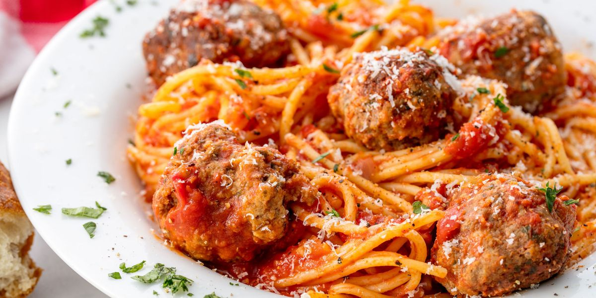

Spaghetti and Meatballs

Spaghetti with meatballs and red sauce, topped with parmesan cheese
This delectable course is usually served with garlic bread on the side.
Types of pasta used for this dish include but not limited to spaghetti,
linguini, fettuccine or spaghettoni.
Ingredients
- white bread
- cold water
- ground beef
- sweet italian sausage ground
- grated paresan cheese
- garlic
- salt
- pepper
- egg
- flour
- olive oil
- yellow onion
- crushed tomatoes
- bay leaves
- basil
- spaghetti
Steps
- Combine bread pieces with 2/3 cup water and set aside 5 min then mash with a fork.
- In a large mixing bowl add: 1 lb ground beef, 1 lb sausage, 1/4 cup parmesan, 4 minced garlic cloves, 1 tsp salt, 1/2 tsp black pepper, 1 egg and mashed bread crumbs. Mix until well combined.
- Form into 1 1/2" meatballs. Dredge/roll meatballs in flour, dusting off excess. Heat a deep, large, heavy skillet or a Dutch oven over medium heat with about 3 Tbsp oil. Add meatballs in 2 batches without crowding the pan and saute until browned on all sides
- In the same skillet over medium heat, add more oil if needed and saute 1 cup chopped onion stirring often until soft and golden (5 min). Add 4 cloves minced garlic and stir 1-2 min until fragrant.
- Stir in 2 cans of crushed tomatoes and 2 bay leaves. Bring to a light boil
- Add meatballs back into the pan with tomato sauce, partially cover with lid or cover with a splatter screen to reduce splatter and cook at a gentle simmer for 30 min, turning the meatballs occasionally. Meatballs will be tender and sauce will be thickened. Five minutes before sauce is done, stir in chopped fresh basil and season with salt and pepper to taste.
- Cook pasta according to package instructions until aldente (or to desired doneness), drain and return to the empty pot.
- Pour sauce and meatballs over spaghetti and toss gently to combine. To serve family-style, transfer to a large platter, garnish with parmesan cheese and fresh basil and serve hot.